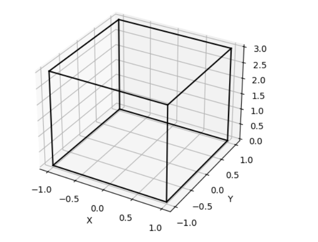
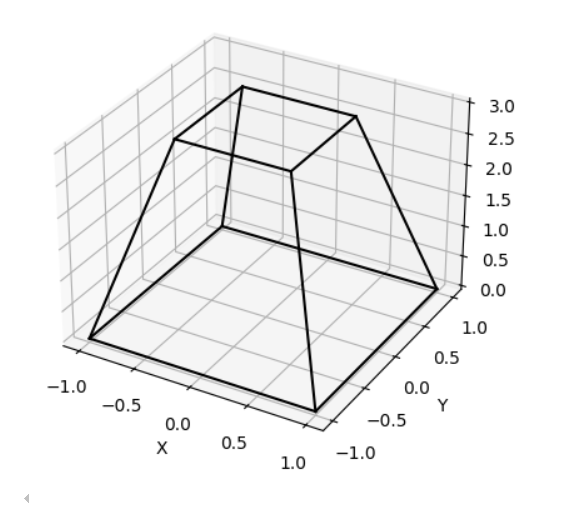
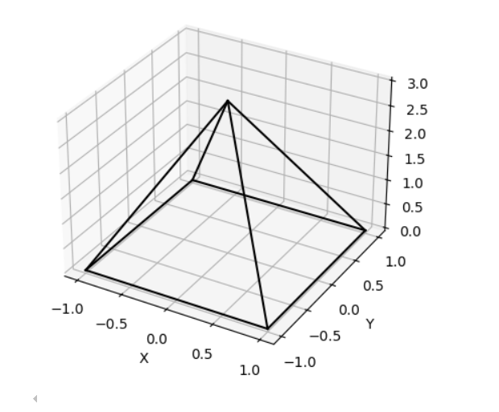
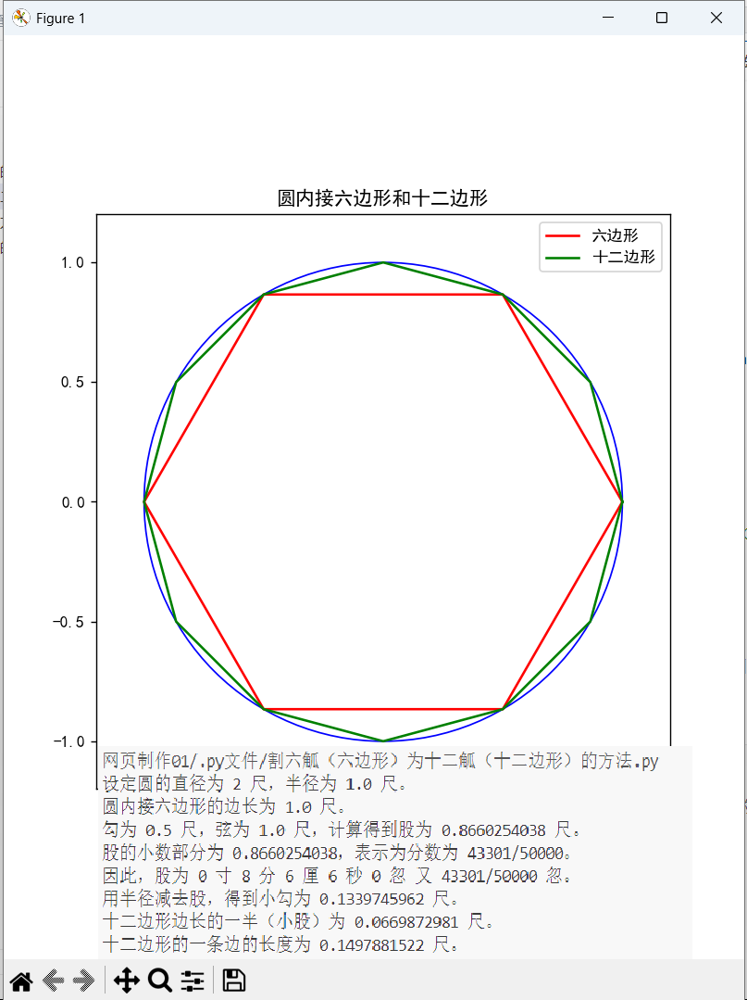
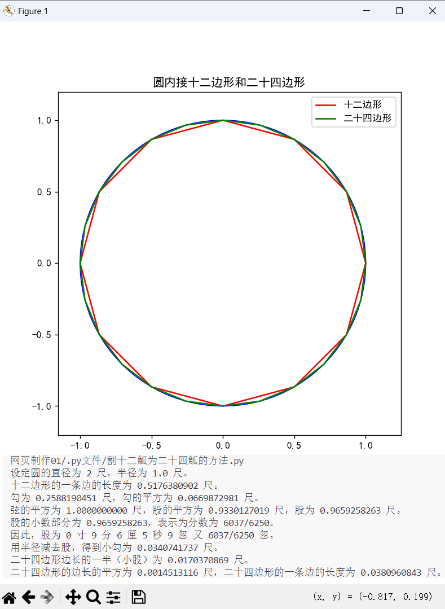
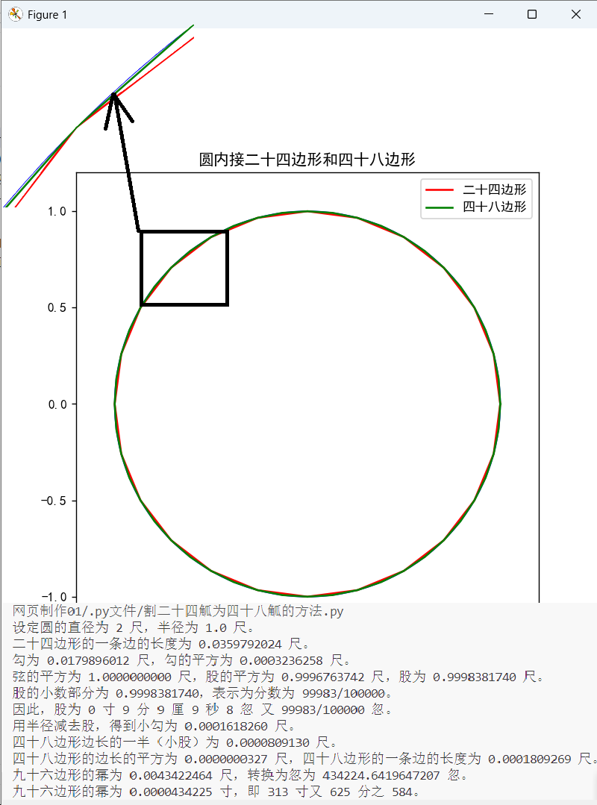

刘徽 - 古代数学家

核心成就
- 📐 数学理论：提出“割圆术”，为圆周率的计算奠定基础
- 📏 几何学：在《九章算术注》中系统阐述几何学理论
- 📚 数学著作：著有《九章算术注》和《海岛算经》，影响深远
- 🔢 数论：对数论有深入研究，提出多项数学定理
- 📊 数学应用：将数学应用于天文、历法等领域
225年
刘徽出生
263年
著《九章算术注》
263年
提出“割圆术”，计算圆周率
270年
著《海岛算经》
290年
逝世

方堡壔
体积计算方法：将上下底的边长相乘，再乘以高，就可得到体积

方亭
体积计算方法：先将上下底的面积相乘，再将上下底的面积各自平方后相加，然后乘以高，最后除以3，就可得到体积

方锥
体积计算方法：将底面积乘以高，再除以3，就可得到体积


